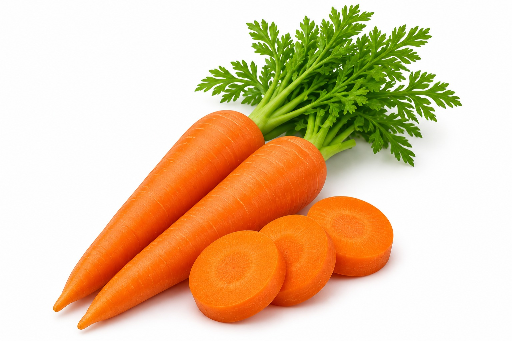
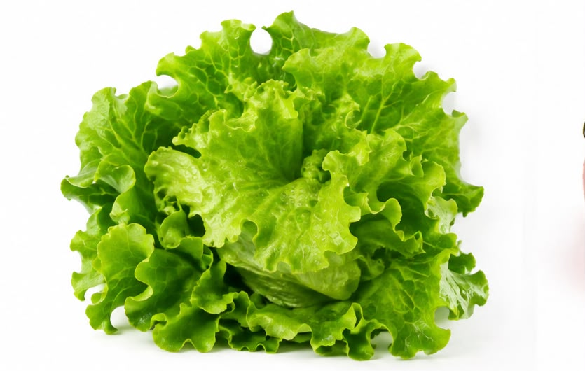
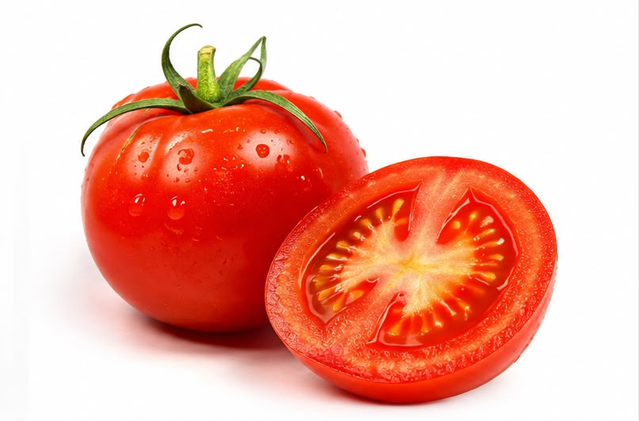
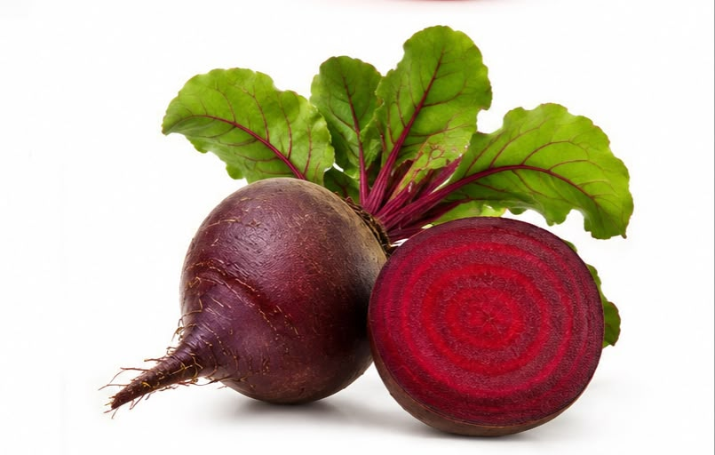

Missão Prato Colorido
Olá, pessoal! Sejam bem-vindos à nossa Missão Prato Colorido!
Vocês já perceberam quantas cores e sabores diferentes existem nos alimentos? As hortaliças, como cenoura, alface, tomate, brócolis e beterraba, ajudam nosso corpo a crescer, ter energia e funcionar bem. Cada uma tem suas próprias cores, formatos, sabores e benefícios.
Por isso, é importante conhecer novos alimentos e descobrir diferentes maneiras de comê-los. E não precisamos gostar de tudo de primeira! O importante é explorar, experimentar e ter curiosidade para descobrir novos sabores.
Agora, vamos embarcar nessa missão e montar um prato bem colorido?
Começar a missão
Conhecendo os alimentos
Veja como cada hortaliça é e de que jeitos podemos comê-la.
-

Cenoura
A cenoura é uma hortaliça de cor laranja, rica em vitamina A, que ajuda a cuidar da nossa visão e da saúde da pele.
Como podemos consumir? Crua, ralada na salada, cozida ou em sopas.
-

Alface
A alface é uma hortaliça de folhas verdes, rica em água e fibras, que ajudam no funcionamento do intestino e na hidratação do corpo.
Como podemos consumir? Em saladas, sanduíches ou acompanhando as refeições.
-

Tomate
O tomate é uma hortaliça de cor vermelha, que contém vitaminas e licopeno, um antioxidante que ajuda a proteger as células do nosso corpo.
Como podemos consumir? Cru em saladas, em molhos ou assado.
-
Brócolis
O brócolis é uma hortaliça verde, rica em fibras e vitaminas, que contribuem para o bom funcionamento do nosso organismo.
Como podemos consumir? Cozido no vapor, refogado ou em tortas.
-

Beterraba
A beterraba é uma hortaliça de cor roxa-avermelhada, rica em fibras, vitaminas e minerais. Sua cor bem forte deixa os pratos mais coloridos!
Como podemos consumir? Crua e ralada, cozida em saladas ou em sucos.
Vamos montar um prato?
Agora que você conheceu as hortaliças, é hora de escolher as suas favoritas e montar um prato bem colorido. Não existe certo ou errado: é só se divertir!
Montar meu prato